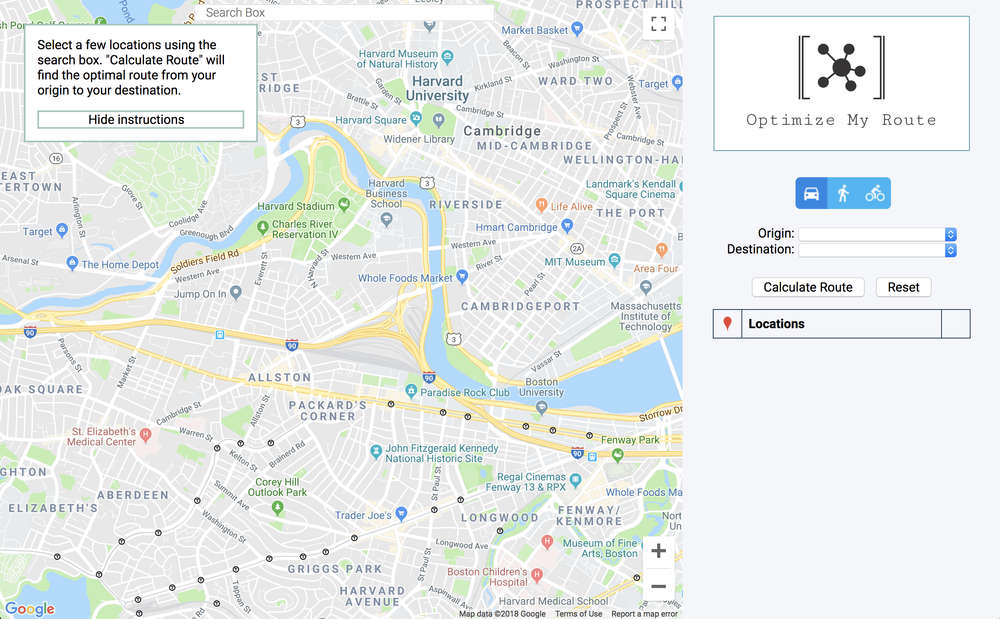
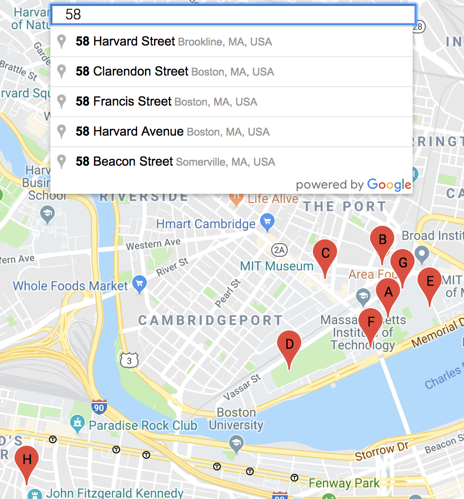
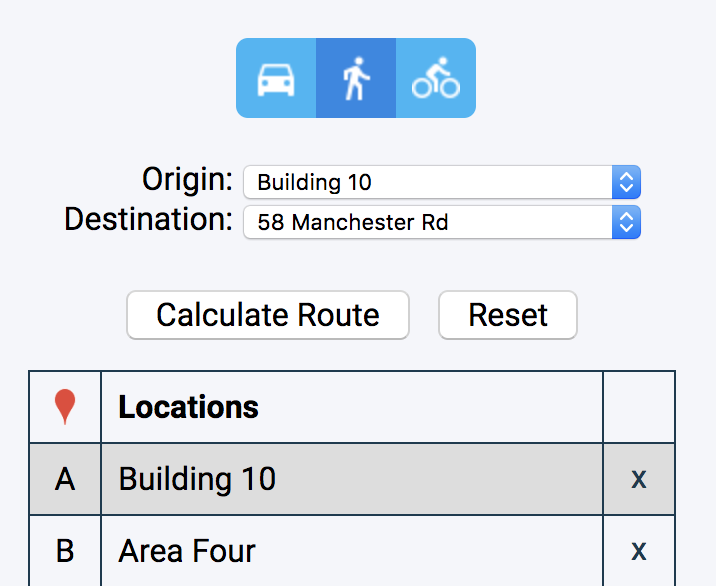
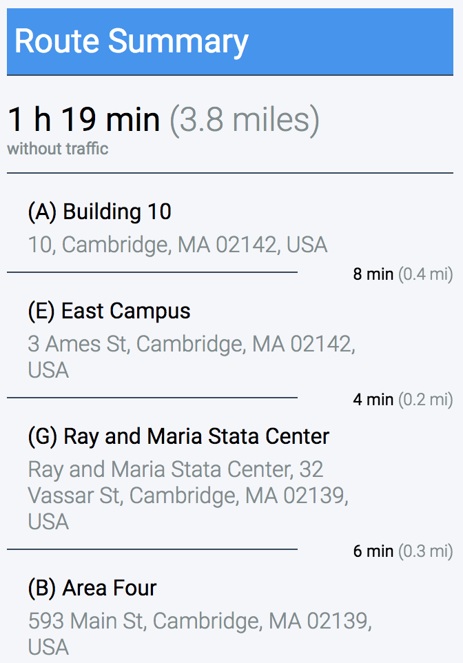
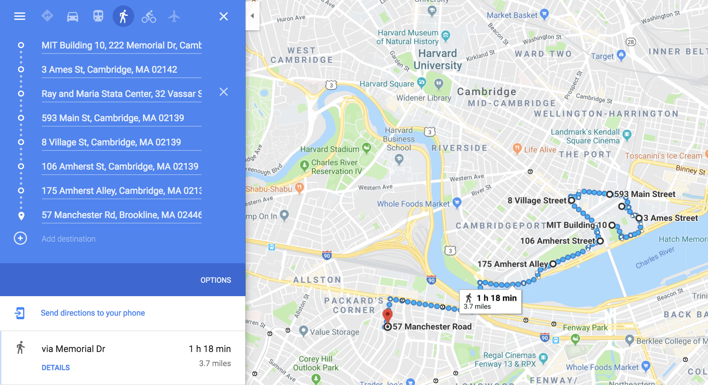

ANDREW CHEN
Optimize My Route
Link to GitHub repository
Optimize My Route (OMR) helps you plan and save time on travel for errands, carpooling, vacation, and more!
Given a list of waypoints, OMR will calculate and display the optimal route from a chosen origin to a chosen destination with the selected mode of travel. OMR provides travel estimates and is integrated with Google Maps for detailed directions.
Try it!OMR is deployed on Heroku, and may take a while to spin up a server upon the first load. I built OMR with Node.js, Express, and the API family of Google Maps Platform.
Screenshots
The Optimize My Route application.

Adding a waypoint in OMR. I've already added several.

The menu. Select mode of travel, origin, and destination! Round-trips are supported.

A summary of the optimized route that appears after clicking "Calculate Route".

OMR can export the route to Google Maps for detailed directions.